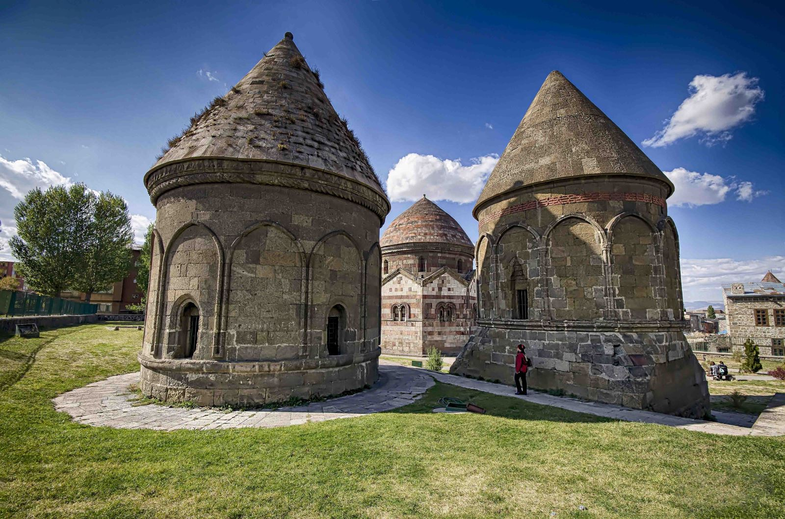

Doğu Anadolu'nun en büyük kenti olan Erzurum'un nüfusu 767.000'dir.
Çobandede Köprüsü. 1297-1298 yılları arasında Veziri Salduzlu Emir Çoban Noyin tarafından inşa edilmiştir. Gündüz saatlerinde sıradan bir köprü gibi görünse de sabah güneşin ilk ışıklarıyla gizemli bir görüntüye sahip olur.Köprü günümüzde kullanılmamaktadır. 7 kemer gözlü olarak inşa edilmiş olsa da, bugün sadece 6 gözü bulunmaktadır.Çobandede Köprüsü, şehrin tarihi gezi alanlarından biridir. Dilerseniz gezinize köprüyü dahil edebilirsiniz.
Anadolu Selçuklu mezar yapılarının en güzel örneklerindendir. Çifte Minareli Medrese'nin güneyinde bulunur. Kümbetlerin en büyüğünün Emir Saltuk'a ait olduğu ve XII. yüzyıl veya XIV. yüzyıl başlarında yapıldığı tahmin edilmektedir. Diğer kümbetler hakkında ise pek fazla bilgi yoktur. Kim tarafından ve ne zaman yaptırıldıklarına dair bilgi olmamakla birlikte, 14. yüzyılda yapıldıkları tahmin edilmektedir. Muazzam mimarilere sahip olan Üç Kümbetler, şehrin önemli tarihi yapılarından biri olup, yerli ve yabancı turistler tarafından sürekli olarak ziyaret edilmektedir.
Bizanslılar tarafından yapıldığı tahmin edilen Erzurum Kalesi, şehrin gezilecek yerlerinin başında gelmektedir. Erzurum'un tarihi zenginlikleri arasında kendini gösteren kale, bulunduğu tepede hem iç hem de dış kaleden meydana gelmektedir. Günümüze kadar dış kale surlarının çoğu yıkılmış olup, dört yöndeki kapılarının sadece isimleri kalmıştır. Tebriz Kapısı, Erzincan Kapısı, Gürcü Kapısı ve İstanbul Kapı… İç kalenin ise sur duvarlarının üzerindeki burçlar görülmeye değerdir. Kale duvarları dönem dönem yenilenmiş olsa da kimler ne zaman yenilendiğini belgeleyen bir yazıt bulunmamaktadır.

Erzurum, Tortum ilçesinde, Bağbaşı’nda bulunan Hahuli Manastırının Meryem Ana Kilisesi Bağdat Kralı III.Davut tarafından 976-1001 yıllarında yapılmıştır.Manastırı oluşturan yapılar bu kilisenin çevresinde yer almıştır.Kilisenin içerisindeki kabartmalarda arslan, boğa, kartal, grifon gibi figürlere geniş ölçüde yer verilmiştir. Ayrıca iç mekanın duvarları ve özellikle apsid İncil’den alınma sahneleri içeren ve Hz.İsa ile Meryem’i tasvir eden fresklerle bezenmiştir. Kulenin üst noktası yuvarlak kemerlerle birbirine bağlanmış, üzeri kubbeli bir köşk şeklindedir.
Kıbrıs Fatihi olarak tanınan ve bir dönem Erzurum Beylerbeyi olan Lala Mustafa Paşa tarafından yaptırılmıştır Lalapaşa Camii. Erzurum'un şehir merkezinde Yakutiye Medresesi'nin doğu kısmında bulunan cami, esasında bir külliyenin parçasıdır ve Mimar Sinan Eserleri arasında gösterilir. Klasik Osmanlı camilerinin örneklerinden olan Lalapaşa Camii'nin ortadaki ana kubbesi dört ayak tarafından taşınmaktadır. Avlusuz inşa edilmiştir ve Merkezi planlı yapılar arasındadır. Günümüzde ise işlevselliğini hala korumakta olup, turistik ziyaretlere de ev sahipliği yapmaktadır.
Cağ kebabı oğlak veya kuzu etinden yapılan Türk mutfağında bir çeşit kebaptır. Önceden terbiye edilmiş etin yatık bir şişe geçirilip odun ateşi üzerinde pişirilmesiyle hazırlanır. Cağ (veya bico) adı verilen şişler kullanılarak servis yapıldığından bu adı almıştır.Oltu Cağ Kebabı Türk Patent ve Marka Kurumu tarafından tescillenmiş ve coğrafi işaret almıştır

Büyükşehir Belediye Erzurumspor, 2005 yılında kurulan spor kulübüdür. 2020-21 sezonunda Süper Lig'de mücadele etmektedir.Erzurumlular tarafında oldukça fazla desteklenmektedir.23700 kişilik Erzurum Kazım Karabekir Stadyumuna sahiptir.A milli takımda 5 futbolcuları vardır